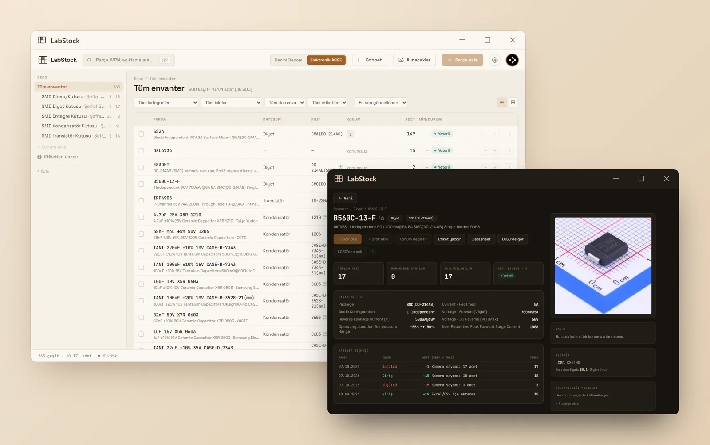
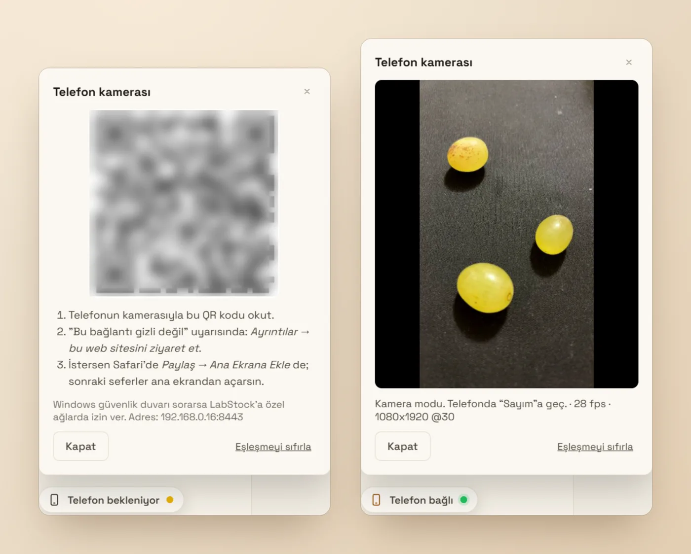
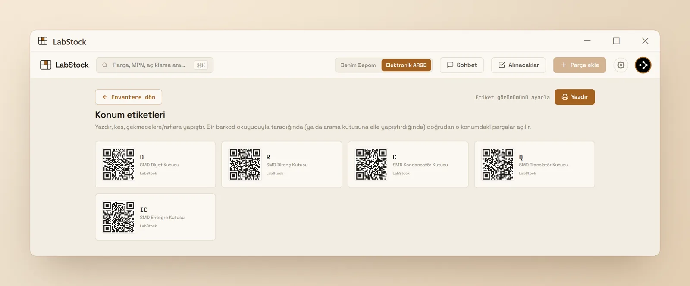
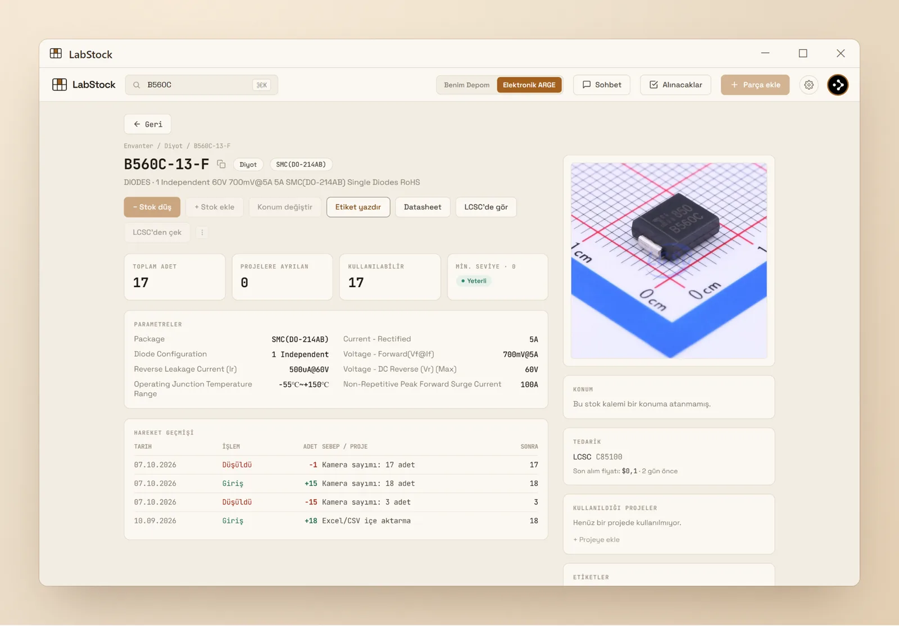

Elektronik parçaların nerede, kaç tane olduğunu bil. Know where your parts are, and how many you have.
LabStock; direnç, entegre ve modüllerin için masaüstü stok programı. Kutuları QR etiketle, LCSC linkinden bilgileri çek, masadaki parçaları telefon kamerasıyla say. LabStock is a desktop inventory app for resistors, ICs and modules. Label your boxes with QR codes, pull part data from an LCSC link, and count parts on your desk with your phone camera.
Türkçe ve İngilizce arayüz · Uygulama içinden otomatik güncelleme English and Turkish interface · Automatic in-app updates

Tezgâhtaki dağınıklık için yazıldıBuilt for a messy workbench
Kendi ihtiyacım için yazdım, her gün kullanıyorum. İşe yarayan kısımlar şunlar:I wrote it for my own bench and use it every day. These are the parts that matter:
Konumlar ve QR etiketLocations & QR labels
Kutu, çekmece, raf. Her konuma etiket bas; okutunca içindekiler açılır.Boxes, drawers, shelves. Print a label for each; scan it to see what's inside.
Linkten otomatik bilgiAuto-fill from a link
LCSC kodunu ya da linkini yapıştır: üretici, kılıf, açıklama, datasheet ve görsel gelir.Paste an LCSC code or link: manufacturer, package, description, datasheet and image are filled in.
Telefonla sayımCount with your phone
Parçaları masaya dök, telefonu tut; adet canlı sayılır, tek dokunuşla stoğa yazılır.Pour parts on the desk and point your phone; they're counted live and saved with one tap.
Alınacaklar listesiTo-buy list
Belirlediğin sınırın altına düşen parçalar listeye kendiliğinden girer.Parts that drop below your minimum go to the list automatically.
İsteğe bağlı asistanOptional assistant
"Elimde hangi 3.3V regülatörler var?" Groq, Gemini veya OpenRouter'ın ücretsiz anahtarlarıyla çalışır."Which 3.3 V regulators do I have?" Works with free Groq, Gemini or OpenRouter keys.
Bulut ya da çevrimdışıCloud or offline
Varsayılan olarak hesabınla senkron. İstersen veriler yalnızca bilgisayarındaki dosyada kalır, hesap da gerekmez.Synced to your account by default. Or keep everything in a local file on your computer, no account needed.
Uygulama kurmadan, telefonla sayCount with your phone, no app to install
Telefon, bilgisayardaki QR'ı okutunca aynı Wi-Fi üzerinden bağlanır. Görüntü bilgisayarda işlenir, internete çıkmaz.Your phone connects over your Wi-Fi by scanning a QR code on the computer. Video is processed on your computer and never leaves your network.
- QR'ı okut: telefonun tarayıcısında kamera sayfası açılır.Scan the QR: a camera page opens in your phone's browser.
- Sayım moduna geç: parçalar canlı işaretlenir ve sayılır.Switch to Count: parts are outlined and counted live.
- Sabitle, parçayı seç: QR etiketini göster ya da adını yaz.Lock and pick the part: show its QR label or type its name.
- LabStock'a yaz: stok ve hareket geçmişi güncellenir.Save to LabStock: stock and movement history are updated.

Kutuya etiket, etikete içerikA label on every box
Konumlar için QR etiket sayfası hazırla, yazdır, yapıştır. Telefonla okutunca o kutudaki parçalar ve adetleri açılır.Print QR labels for your locations and stick them on. Scan one with your phone to see the parts and quantities inside.

Datasheet, parametreler, geçmişDatasheet, parameters, history
Her parçanın kılıfı, parametreleri, tedarikçi kodu ve son alış fiyatı tek sayfada. Her giriş ve çıkış hareket geçmişine işlenir.Package, parameters, supplier code and last purchase price on one page. Every stock change is logged in the movement history.

Ücretsiz, ticari kullanım dahilFree, including commercial use
Kurulum dosyaları GitHub Releases'ten iner. Uygulama yeni sürümü kendisi bulur ve günceller.Installers are downloaded from GitHub Releases. The app finds and installs new versions by itself.
Windows
Windows 10 / 11 · 64-bit
Kurulum dosyası henüz imzalı olmadığı için SmartScreen uyarısı çıkabilir: Ek bilgi → Yine de çalıştır. Microsoft Store sürümü onay aşamasında.The installer isn't code-signed yet, so SmartScreen may warn you: More info → Run anyway. A Microsoft Store version is in review.
Merak edilenlerCommon questions
Gerçekten ücretsiz mi?Is it really free?
Evet, kişisel ve ticari kullanım dahil. Kaynak kodu GitHub'da görülebilir; açık kaynak lisansı değildir.Yes, for personal and commercial use. The source code is visible on GitHub; it isn't under an open-source license.
Verilerim nerede duruyor?Where is my data stored?
Varsayılan olarak hesabına bağlı olarak Supabase'de (bulut) tutulur, böylece birden fazla bilgisayarda aynı envanteri görürsün. Ayarlar'dan çevrimdışı moda geçersen veriler yalnızca bilgisayarındaki bir SQLite dosyasında kalır.By default it's stored in the cloud (Supabase) under your account, so the same inventory works on several computers. Switch to offline mode in Settings and everything stays in a SQLite file on your computer.
Telefon kamerası için uygulama gerekiyor mu?Do I need an app on my phone?
Hayır. Bilgisayardaki QR'ı okutunca telefonun tarayıcısında açılır. Telefon ve bilgisayar aynı Wi-Fi'da olmalı.No. Scan the QR code on the computer and it opens in your phone's browser. Phone and computer need to be on the same Wi-Fi.
Yapay zekâ asistanı zorunlu mu?Is the AI assistant required?
Hayır, tamamen isteğe bağlı. Kullanmak istersen kendi ücretsiz anahtarını Ayarlar'a girersin.No, it's optional. If you want it, add your own free API key in Settings.
Hata buldum ya da önerim varI found a bug or have an idea
GitHub'da issue açabilirsin; uygulamanın içindeki geri bildirim formu da bana ulaşır.Please open an issue on GitHub; the feedback form inside the app reaches me too.